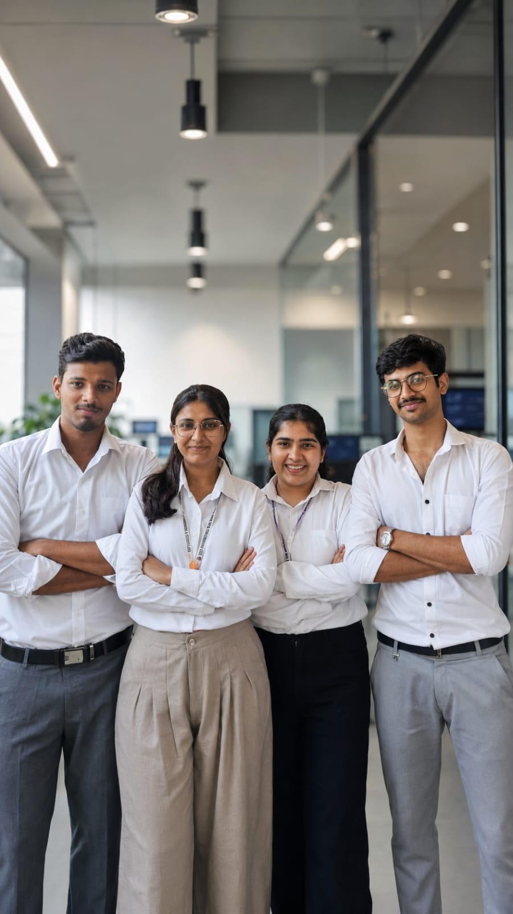

From Seed to Serve.
One intelligent platform connecting crop planning, crop health, yield, and harvest.
One intelligent platform connecting crop planning, crop health, yield, and harvest.
AI-powered guidance that helps you make better decisions at every stage of cultivation.
Turn farm data into simple, actionable insights for better cultivation decisions.
Intelligent guidance from choosing the right crop to protecting it and planning the harvest.
Harness AI to understand your crops, optimize resources, and plan for better harvests.
Seed2Serve is on a mission to transform agriculture with AI-driven insights that help farmers plan better, grow better, and harvest better.
We believe that the right information, at the right time, can change every farmer’s future.
AI-driven recommendations for better decisions.
Optimize resources and improve yield.
Detect issues early and minimize crop loss.
Built to support farmers at every step.
Advanced AI tools to simplify farming and maximize results.
Answers to the most common questions about how Seed2Serve works and how our AI solutions can help your farm.
Seed2Serve is an AI-powered cultivation advisory platform that helps farmers make smarter decisions across the entire growing cycle — from crop planning to harvest.
By combining weather, soil, and crop data with AI, Seed2Serve delivers clear, actionable insights that help farmers plan better, reduce risk, and improve yield.
Seed2Serve is built for smallholder farmers, large agricultural enterprises, cooperatives, and agriculture advisors who want to apply data-driven insights to every cultivation decision.
Smart Crop Planning analyzes soil, weather, and historical data to recommend the most suitable crops for your land, season, and resources.
Water Management monitors soil moisture and weather to schedule irrigation at the right time, saving water while keeping crops healthy and maximizing yield.
Using computer vision, Disease Detection identifies crop diseases from images and alerts you early, so you can protect your crops before an outbreak spreads.
Fertilizer Recommendation builds personalized nutrient plans from soil analysis and crop needs, so every input is used where it matters most for better soil health.
Harvest Optimization predicts the best time to harvest and provides yield and market insights, helping you capture the highest value from every crop.
Getting started is simple — create your account, add your farm details, and our AI will begin delivering tailored insights right away.
Yes. You can request a personalized demo of Seed2Serve to see how our AI solutions would work for your specific farm and goals.
We are a team of student from the 4th year AIML branch at SDMCET, united by a shared vision of using technology and innovation to create meaningful solutions. We believe that ideas become powerful when they are built with purpose, collaboration, and a desire to make a positive impact on society. Through our work, we aim to turn our knowledge and creativity into practical solutions that can contribute to a better and more sustainable future.
